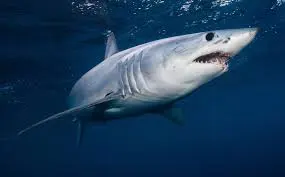

Carcharhinus amblyrhynchos
aSharks are a group of elasmobranch fish characterized by a cartilaginous skeleton, five to seven gill slits on the sides of the head, and pectoral fins that are not fused to the head. Modern sharks are classified within the clade Selachimorpha[1] (or Selachii) and are the sister group to the Batoidea (rays and kin). .